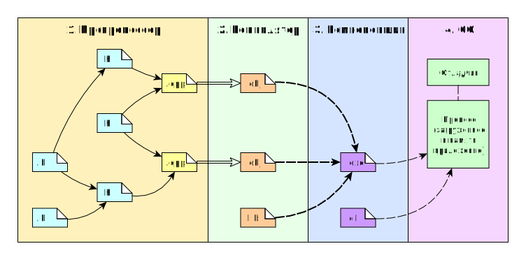

-
Введение
- Процесс трансляции
- Целые числа
- Числа с плавающей запятой
- Указатели и ссылки
|
Транслятор translator — программа или устройство, переводящее текст с одного языка на другой язык. Процесс работы транслятора называют трансляцией translation.
Процесс трансляции:
- Каждая единица трансляции (.cpp и .c файлы) обрабатывается независимо.
- Препроцессор просматривает файл и ищет в нём директивы препроцессора (строки, начинающиеся на знак #) и макросы (идентификаторы, для которых определены замены). Данный процесс может производиться рекурсивно. Например, пусть есть три файла a.h, b.h и hw.cpp. Последний является единицей трансляции, поэтому все операции будут выполняться с ним.
- Компилятор транслирует каждую единицу трансляции в файл объектного кода (традиционно обозначаемые расширением .obj в Windows, .o в Unix-подобных системах). Это самая сложная операция во всём процессе, производящаяся в несколько стадий (фаз трансляции), но на данном этапе мы не будем погружаться в подробности.
- Компоновщик формирует результирующий модуль, соединяя файлы объектного кода и файлы статически-компонуемых библиотек (традиционно обозначаемые расширением .lib в Windows, .a в Unix-подобных системах).
- При запуске исполняемого файла создаётся объект операционной системы — процесс, который представляет собой исполняющееся приложение и распоряжается всеми ресурсами, выделенными приложению операционной системой. В частности, процесс обладает собственной памятью, в которую загружается исходный код исполняемого файла и дополнительных модулей библиотек (динамически-компонуемых библиотек, обозначаемых расширением .dll в Windows, .so в Unix-подобных системах). В случае, если исполняемый файл запускается в режиме отладки, то запущенный процесс контролируется отладчиком (который исполняется в отдельном процессе).

Трансляция и исполнение
|